| customer | weekly_sessions | support_tickets | label | |
|---|---|---|---|---|
| 0 | A | 2 | 8 | churn |
| 1 | B | 3 | 7 | churn |
| 2 | C | 8 | 2 | stay |
| 3 | D | 9 | 3 | stay |
| 4 | E | 10 | 1 | stay |
| 5 | query | 7 | 4 | NaN |
This 3-hour laboratory studies k-nearest neighbors (k-NN) as an instance-based classifier.
By the end of the lab you should be able to:
KNeighborsClassifier models;k, distance weighting, and a distance metric using validation data;k-NN does not fit a parametric model. At prediction time it:
k closest records;We start with a tiny customer-churn example so every number is visible.
| customer | weekly_sessions | support_tickets | label | |
|---|---|---|---|---|
| 0 | A | 2 | 8 | churn |
| 1 | B | 3 | 7 | churn |
| 2 | C | 8 | 2 | stay |
| 3 | D | 9 | 3 | stay |
| 4 | E | 10 | 1 | stay |
| 5 | query | 7 | 4 | NaN |
| customer | weekly_sessions | support_tickets | label | distance_to_query | |
|---|---|---|---|---|---|
| 3 | D | 9 | 3 | stay | 2.236068 |
| 2 | C | 8 | 2 | stay | 2.236068 |
| 4 | E | 10 | 1 | stay | 4.242641 |
| 1 | B | 3 | 7 | churn | 5.000000 |
| 0 | A | 2 | 8 | churn | 6.403124 |
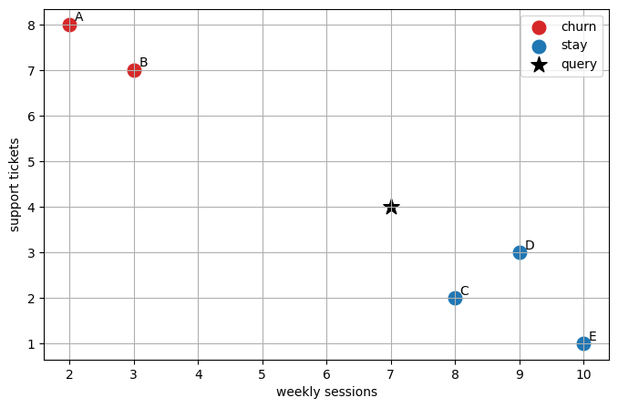
Use the table of distances above.
k=1?k=3?k=5?With weights="distance", closer neighbors have more influence. A common intuition is that a neighbor at distance 1 should matter more than a neighbor at distance 5.
| customer | label | distance_to_query | inverse_distance_weight | |
|---|---|---|---|---|
| 3 | D | stay | 2.236068 | 0.447214 |
| 2 | C | stay | 2.236068 | 0.447214 |
| 4 | E | stay | 4.242641 | 0.235702 |
| total_weight | |
|---|---|
| label | |
| stay | 1.130129 |
The Iris dataset is small enough to visualize in two dimensions. We will use only petal length and petal width for the first experiment.
| sepal length (cm) | sepal width (cm) | petal length (cm) | petal width (cm) | species_id | species | |
|---|---|---|---|---|---|---|
| 0 | 5.1 | 3.5 | 1.4 | 0.2 | 0 | setosa |
| 1 | 4.9 | 3.0 | 1.4 | 0.2 | 0 | setosa |
| 2 | 4.7 | 3.2 | 1.3 | 0.2 | 0 | setosa |
| 3 | 4.6 | 3.1 | 1.5 | 0.2 | 0 | setosa |
| 4 | 5.0 | 3.6 | 1.4 | 0.2 | 0 | setosa |
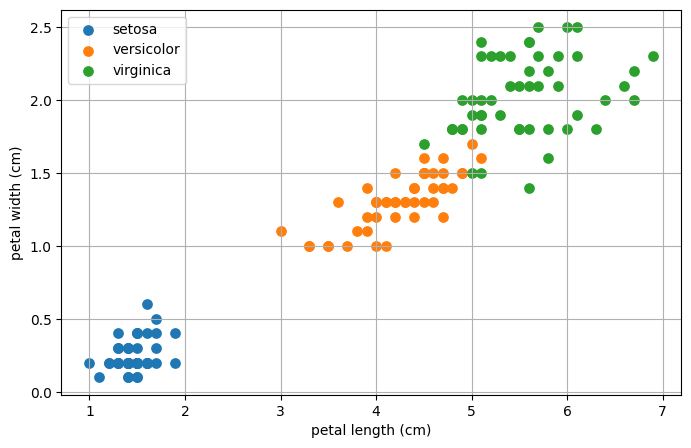
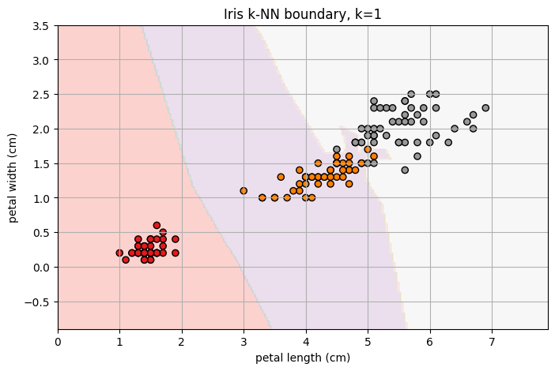
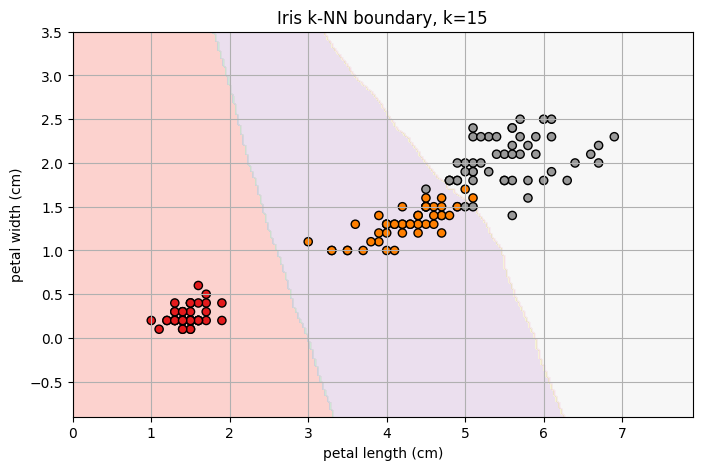
Compare the two boundaries.
We now move to a realistic binary classification task. The target is whether a tumor is malignant or benign.
(569, 30)| mean radius | mean texture | mean perimeter | mean area | mean smoothness | mean compactness | mean concavity | mean concave points | mean symmetry | mean fractal dimension | ... | worst radius | worst texture | worst perimeter | worst area | worst smoothness | worst compactness | worst concavity | worst concave points | worst symmetry | worst fractal dimension | |
|---|---|---|---|---|---|---|---|---|---|---|---|---|---|---|---|---|---|---|---|---|---|
| 0 | 17.99 | 10.38 | 122.80 | 1001.0 | 0.11840 | 0.27760 | 0.3001 | 0.14710 | 0.2419 | 0.07871 | ... | 25.38 | 17.33 | 184.60 | 2019.0 | 0.1622 | 0.6656 | 0.7119 | 0.2654 | 0.4601 | 0.11890 |
| 1 | 20.57 | 17.77 | 132.90 | 1326.0 | 0.08474 | 0.07864 | 0.0869 | 0.07017 | 0.1812 | 0.05667 | ... | 24.99 | 23.41 | 158.80 | 1956.0 | 0.1238 | 0.1866 | 0.2416 | 0.1860 | 0.2750 | 0.08902 |
| 2 | 19.69 | 21.25 | 130.00 | 1203.0 | 0.10960 | 0.15990 | 0.1974 | 0.12790 | 0.2069 | 0.05999 | ... | 23.57 | 25.53 | 152.50 | 1709.0 | 0.1444 | 0.4245 | 0.4504 | 0.2430 | 0.3613 | 0.08758 |
| 3 | 11.42 | 20.38 | 77.58 | 386.1 | 0.14250 | 0.28390 | 0.2414 | 0.10520 | 0.2597 | 0.09744 | ... | 14.91 | 26.50 | 98.87 | 567.7 | 0.2098 | 0.8663 | 0.6869 | 0.2575 | 0.6638 | 0.17300 |
| 4 | 20.29 | 14.34 | 135.10 | 1297.0 | 0.10030 | 0.13280 | 0.1980 | 0.10430 | 0.1809 | 0.05883 | ... | 22.54 | 16.67 | 152.20 | 1575.0 | 0.1374 | 0.2050 | 0.4000 | 0.1625 | 0.2364 | 0.07678 |
5 rows × 30 columns
| count | |
|---|---|
| target | |
| benign | 357 |
| malignant | 212 |
k-NN is driven by distances. Before training anything, inspect whether all features live on comparable scales.
| min | max | range | std | |
|---|---|---|---|---|
| worst area | 185.2000 | 4254.000 | 4068.8000 | 569.356993 |
| mean area | 143.5000 | 2501.000 | 2357.5000 | 351.914129 |
| area error | 6.8020 | 542.200 | 535.3980 | 45.491006 |
| worst perimeter | 50.4100 | 251.200 | 200.7900 | 33.602542 |
| mean perimeter | 43.7900 | 188.500 | 144.7100 | 24.298981 |
| worst texture | 12.0200 | 49.540 | 37.5200 | 6.146258 |
| mean texture | 9.7100 | 39.280 | 29.5700 | 4.301036 |
| worst radius | 7.9300 | 36.040 | 28.1100 | 4.833242 |
| perimeter error | 0.7570 | 21.980 | 21.2230 | 2.021855 |
| mean radius | 6.9810 | 28.110 | 21.1290 | 3.524049 |
| texture error | 0.3602 | 4.885 | 4.5248 | 0.551648 |
| radius error | 0.1115 | 2.873 | 2.7615 | 0.277313 |
train (426, 30) test (143, 30)target
benign 0.626761
malignant 0.373239
Name: train proportion, dtype: float64target
benign 0.629371
malignant 0.370629
Name: test proportion, dtype: float64This first model is deliberately incomplete. It shows what happens when Euclidean distance is computed on raw feature units.
| raw k-NN | |
|---|---|
| accuracy | 0.930070 |
| balanced_accuracy | 0.921174 |
| f1 | 0.945055 |
| log_loss | 0.841711 |
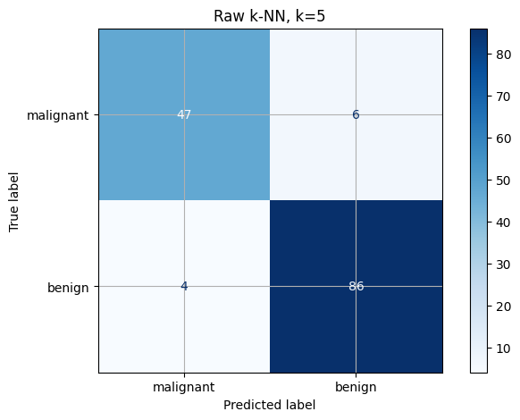
Standardization transforms each feature so that the training-set mean is 0 and the training-set standard deviation is 1.
Important: fit the scaler on the training set only. The test set must remain unseen during preprocessing.
| raw k-NN | scaled k-NN | |
|---|---|---|
| accuracy | 0.930070 | 0.979021 |
| balanced_accuracy | 0.921174 | 0.971698 |
| f1 | 0.945055 | 0.983607 |
| log_loss | 0.841711 | 0.332417 |
The model can predict differently after scaling because the nearest records are no longer necessarily the same records.
| raw_neighbor_index | raw_distance | raw_label | scaled_neighbor_index | scaled_distance | scaled_label | |
|---|---|---|---|---|---|---|
| 0 | 312 | 13.726455 | benign | 502 | 1.976692 | benign |
| 1 | 79 | 15.618625 | benign | 249 | 2.148792 | benign |
| 2 | 436 | 16.337859 | benign | 221 | 2.193188 | benign |
| 3 | 454 | 18.257686 | benign | 422 | 2.205316 | benign |
| 4 | 331 | 24.862954 | benign | 394 | 2.234937 | benign |
Look at the feature-range table and the neighbor-comparison table.
In this synthetic dataset, feature x_small_signal contains the useful signal. Feature x_large_noise is mostly noise but has a much larger numeric range. Without scaling, the noisy feature can dominate distances.
| model | accuracy | |
|---|---|---|
| 0 | raw | 0.555556 |
| 1 | scaled | 1.000000 |
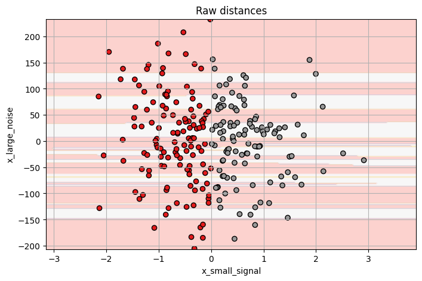
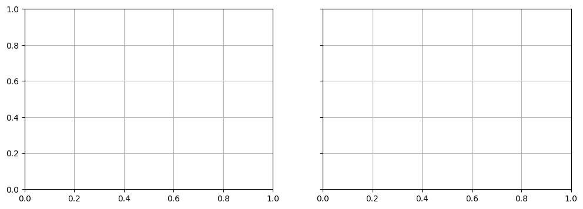
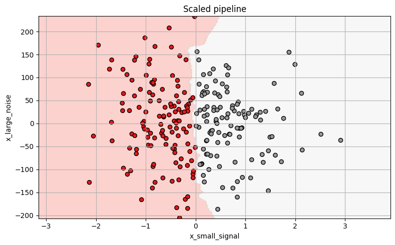
The value of k controls the bias-variance trade-off.
k: flexible, local, sensitive to noise;k: smoother, more stable, may underfit.We choose k on training data using cross-validation. The test set is used once at the end.
| k | accuracy | balanced_accuracy | f1 | log_loss | |
|---|---|---|---|---|---|
| 0 | 1 | 0.936662 | 0.930693 | 0.949835 | 2.282929 |
| 1 | 3 | 0.962435 | 0.953785 | 0.970670 | 0.728563 |
| 2 | 5 | 0.967114 | 0.958796 | 0.974373 | 0.489835 |
| 3 | 7 | 0.964788 | 0.955671 | 0.972604 | 0.257160 |
| 4 | 9 | 0.969494 | 0.961921 | 0.976141 | 0.263456 |
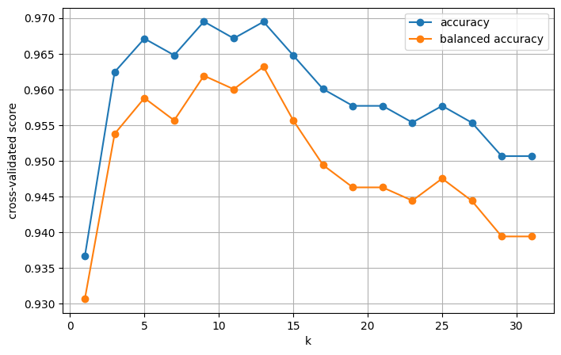
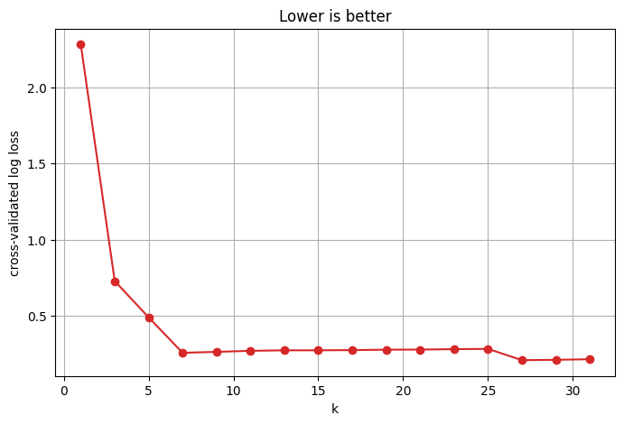
| k | accuracy | balanced_accuracy | f1 | log_loss | |
|---|---|---|---|---|---|
| 4 | 9 | 0.969494 | 0.961921 | 0.976141 | 0.263456 |
| 6 | 13 | 0.969466 | 0.963160 | 0.975973 | 0.273513 |
| 5 | 11 | 0.967141 | 0.960035 | 0.974204 | 0.270078 |
| 2 | 5 | 0.967114 | 0.958796 | 0.974373 | 0.489835 |
| 3 | 7 | 0.964788 | 0.955671 | 0.972604 | 0.257160 |
| k | accuracy | balanced_accuracy | f1 | log_loss | |
|---|---|---|---|---|---|
| 13 | 27 | 0.955349 | 0.944410 | 0.965559 | 0.208949 |
| 14 | 29 | 0.950670 | 0.939433 | 0.961919 | 0.211107 |
| 15 | 31 | 0.950670 | 0.939433 | 0.961919 | 0.215226 |
| 3 | 7 | 0.964788 | 0.955671 | 0.972604 | 0.257160 |
| 4 | 9 | 0.969494 | 0.961921 | 0.976141 | 0.263456 |
Use the validation curves.
k would you choose if the objective is accuracy?k would you choose if probability quality matters and log loss is considered?k necessarily the smallest or largest tested value?k?Now we search several reasonable k-NN configurations with GridSearchCV.
0.9650462962962962{'knn__metric': 'euclidean',
'knn__n_neighbors': 7,
'knn__weights': 'uniform',
'scaler': MinMaxScaler()}| param_scaler | param_knn__n_neighbors | param_knn__weights | param_knn__metric | mean_train_score | mean_test_score | std_test_score | rank_test_score | |
|---|---|---|---|---|---|---|---|---|
| 13 | MinMaxScaler() | 7 | uniform | euclidean | 0.968133 | 0.965046 | 0.010787 | 1 |
| 15 | MinMaxScaler() | 7 | distance | euclidean | 1.000000 | 0.965046 | 0.010787 | 1 |
| 87 | MinMaxScaler() | 11 | distance | manhattan | 1.000000 | 0.965046 | 0.017654 | 1 |
| 85 | MinMaxScaler() | 11 | uniform | manhattan | 0.966078 | 0.965046 | 0.017654 | 1 |
| 19 | MinMaxScaler() | 9 | distance | euclidean | 1.000000 | 0.965011 | 0.016036 | 5 |
| 17 | MinMaxScaler() | 9 | uniform | euclidean | 0.967029 | 0.965011 | 0.016036 | 5 |
| 24 | StandardScaler() | 13 | uniform | euclidean | 0.959791 | 0.963160 | 0.010799 | 7 |
| 26 | StandardScaler() | 13 | distance | euclidean | 1.000000 | 0.963160 | 0.010799 | 7 |
| 79 | MinMaxScaler() | 7 | distance | manhattan | 1.000000 | 0.963160 | 0.013251 | 7 |
| 77 | MinMaxScaler() | 7 | uniform | manhattan | 0.969236 | 0.963160 | 0.013251 | 7 |
| 16 | StandardScaler() | 9 | uniform | euclidean | 0.963419 | 0.961921 | 0.015163 | 11 |
| 9 | MinMaxScaler() | 5 | uniform | euclidean | 0.973952 | 0.961921 | 0.015163 | 11 |
| raw k-NN | scaled k=5 | tuned k-NN | |
|---|---|---|---|
| accuracy | 0.930070 | 0.979021 | 0.965035 |
| balanced_accuracy | 0.921174 | 0.971698 | 0.956709 |
| f1 | 0.945055 | 0.983607 | 0.972678 |
| log_loss | 0.841711 | 0.332417 | 0.094363 |
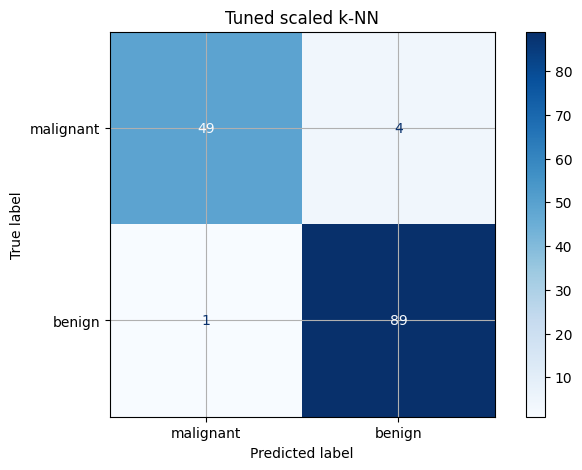
precision recall f1-score support
malignant 0.98 0.92 0.95 53
benign 0.96 0.99 0.97 90
accuracy 0.97 143
macro avg 0.97 0.96 0.96 143
weighted avg 0.97 0.97 0.96 143
k-NN is sensitive to irrelevant dimensions because every feature can contribute to distance. Scaling solves unequal units, but it does not decide which features are useful.
| dataset | test_balanced_accuracy | test_f1 | |
|---|---|---|---|
| 0 | original features | 0.956709 | 0.972678 |
| 1 | original + 20 random features | 0.917296 | 0.945652 |
Work in pairs. Build a compact experimental report using the same train/test split.
Required tasks:
k that were not the best validation value.StandardScaler and MinMaxScaler.| model | accuracy | balanced_accuracy | f1 | log_loss | |
|---|---|---|---|---|---|
| 0 | raw k=5 | 0.930070 | 0.921174 | 0.945055 | 0.841711 |
| 1 | standard scaled k=5 | 0.979021 | 0.971698 | 0.983607 | 0.332417 |
| 2 | minmax scaled k=5 | 0.986014 | 0.981132 | 0.989011 | 0.078066 |
Pipeline to make this automatic.k, weights, metric, and scaler are hyperparameters and should be selected with validation or cross-validation.KNeighborsClassifier, Pipeline, StandardScaler, GridSearchCV.Matteo Francia - Machine Learning and Data Mining (Module I) - A.Y. 2026/27